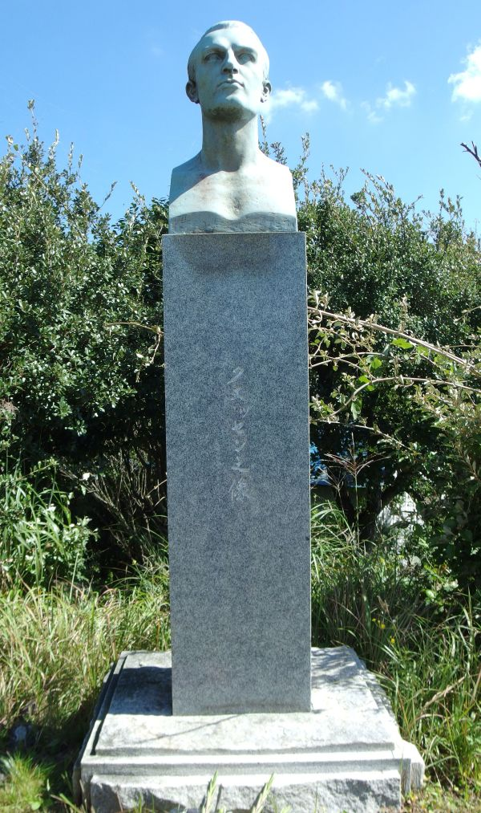
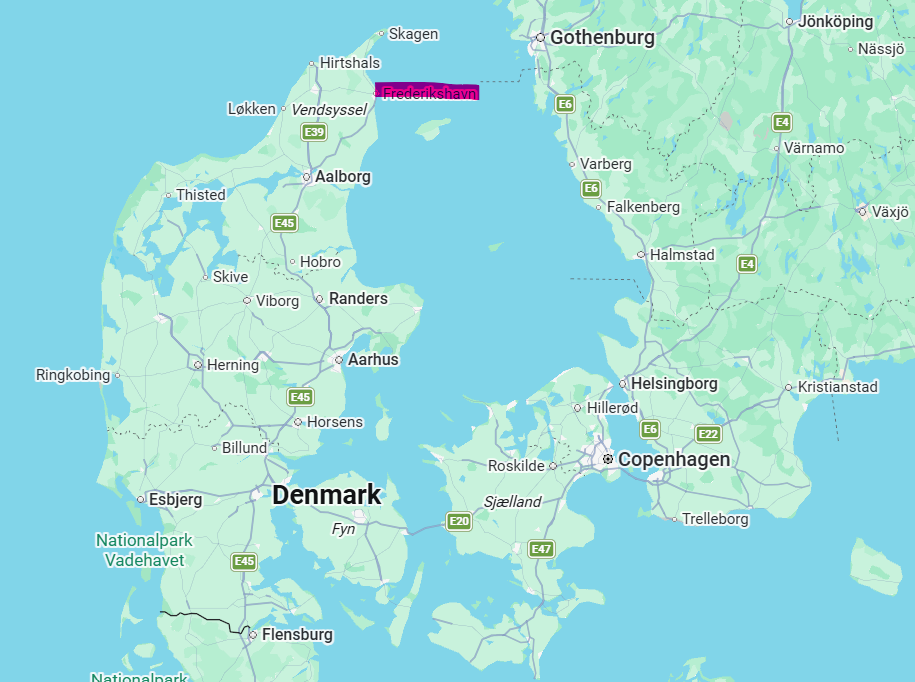
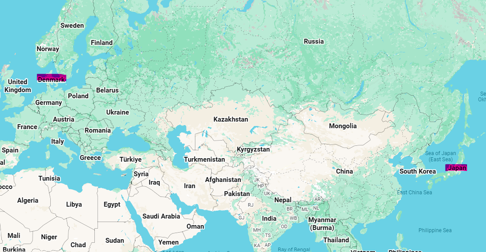
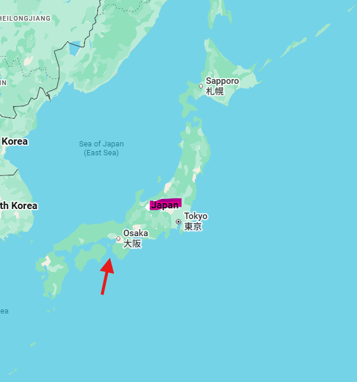
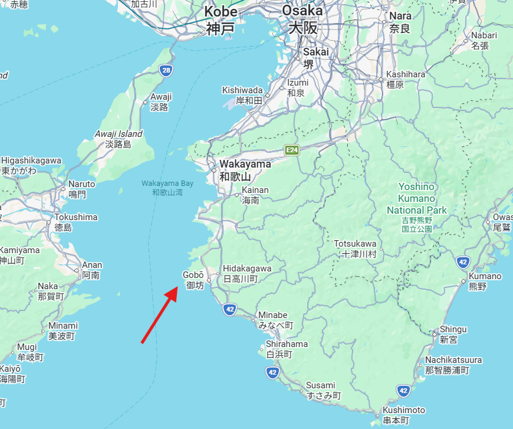
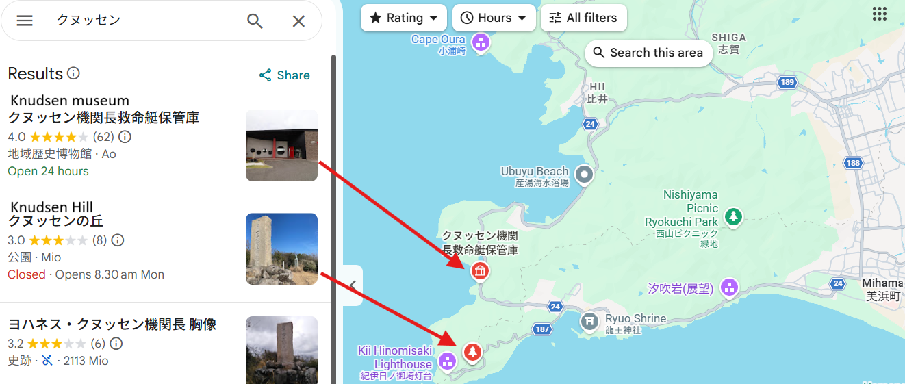

Johannes Knudsen
Johannes Knudsen was a Danish sailor from Frederikshavn, Denmark.

Knudsen Hill
On the evening of February 10, 1957, the Danish ship Ellen Mærsk came upon the Japanese vessel Takasago Maru, which was burning fiercely off the coast of Hinomisaki.
Despite strong winds and dangerous conditions, the crew of the Ellen ærsk attempted a rescue.
When the exhausted captain of the Takasago Maru fell into the sea, Johannes courageously jumped into the water to save him. Sadly, both men were lost to the waves.
The next morning, his body was discovered on a nearby beach together with a lifeboat from the Ellen Mærsk. He was only 39 years old.
Unfortunately, all three crew members of the Takasago Maru and Knudsen perished in the tragedy.
Knudsen Museum

Knudsen's courageous actions continue to be honored by the local community. A nearby hill, known as "Knudsen's Hill," was named after him, and a small museum has been built there. Every February, local residents hold a flower-laying ceremony to commemorate his bravery. Furthermore, the town has established a sister-city relationship with Frederikshavn, Knudsen's hometown in Denmark. Through this partnership, students from both cities regularly take part in short-term exchange programs.




